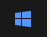
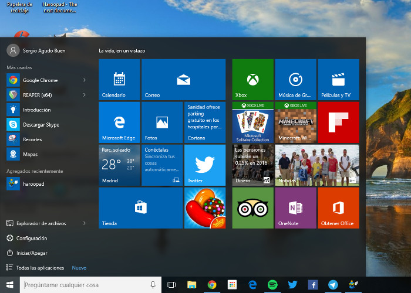
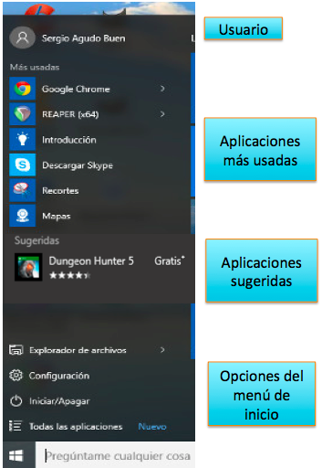
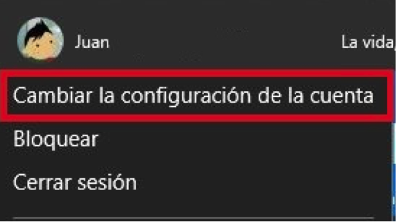

El Botón  Iniciar es el botón a través del cual podemos acceder a todas las opciones que nos ofrece Windows 10. Si lo seleccionamos se desplegará un menú similar al que te mostramos a continuación. Se trata del menú Inicio. También podemos acceder a él mediante el teclado pulsando la tecla Windows.

Como mencionamos, una de las novedades más destacadas de Windows 10 es el rediseño de su menú Inicio, el cual intenta aprovechar lo mejor que había tanto en la versión 7 como en la versión 8. Se conforma de dos secciones muy claras: La lista de programas y tareas a la izquierda y una vista de "Tiles", baldosas o Azulejos a la derecha.
Concentrémonos primero en la parte izquierda. En la parte superior, además del nombre del usuario, tenemos una lista de las aplicaciones más usadas. En la parte inferior, tenemos cuatro opciones que se mantienen fijas en el menú. Entre ambas, eventualmente, aparecerán sugerencias de aplicaciones de la tienda en línea de Microsoft y avisos de programas instalados recientemente, como se puede ver en la siguiente imagen.

Si hacemos clic en el nombre de usuario, obtenemos un menú con las opciones que pueden verse en la siguiente imagen:

Más adelante veremos los detalles de la opción llamada Cambiar la configuración de la cuenta. Por su parte, la opción Bloquear presenta la imagen de bloqueo que mostramos al inicio de esta unidad y obliga a reinsertar la contraseña para volver al escritorio. Cerrar sesión también nos devuelve a la pantalla donde indicamos nuestra contraseña, en donde podríamos cambiar de usuario, lo cual también será motivo de estudio más adelante. En tanto, continuemos con esta mirada al menú Inicio.